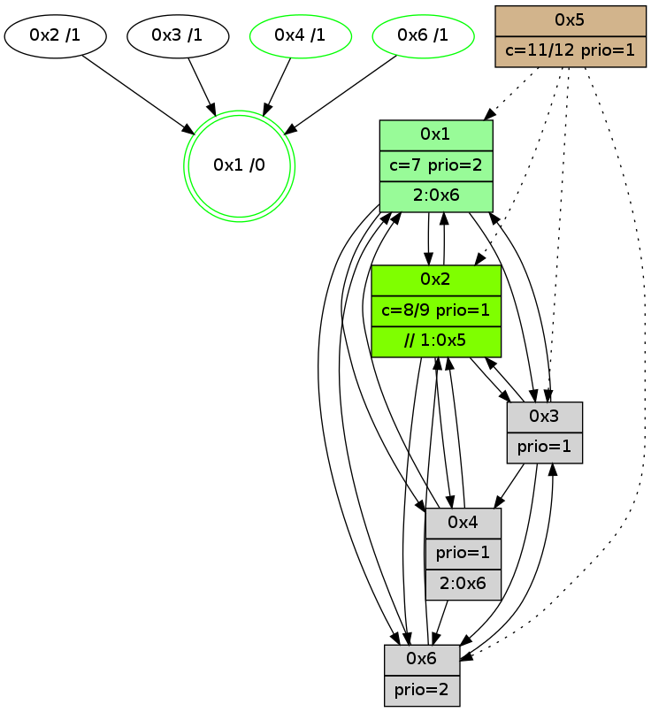

>> << IDX [start] -100 -25 -5 +0 +5 +25 +100 [945.00730896]
 Previous packets
----------------------------------------------------------------------
940.076257 beacon01(adaf) #0 coord=01,02,05,03,04,06 cycle=432.0ms assoc
-- color-indic=1 64 52 23
940.086218 beacon02(adaf) #0 coord=01,02,05,03,04,06 cycle=432.0ms assoc 64 03 dc
940.096218 beacon05(adaf) #0 coord=01,02,05,03,04,06 cycle=432.0ms assoc 64 a5 f6
940.106220 beacon03(adaf) #0 coord=01,02,05,03,04,06 cycle=432.0ms assoc 64 39 d2
940.116218 beacon04(adaf) #0 coord=01,02,05,03,04,06 cycle=432.0ms assoc 64 9f f8
940.126219 beacon06(adaf) #0 coord=01,02,05,03,04,06 cycle=432.0ms assoc 64 eb e4
940.137913 [Hello(2): seq=1234 sym=3,6,1,4 sysInfo=hasWarning stat=3:4,3,3,1/6:4,2,2,0/1:13,1,14,0/4:1,3,2,1]
940.142266 [Color(4) seq=100 @0:0 prio=1 >2.@6,1.@3 c=7;1,4,6,8,9,b]
940.148565 [Hello(1): seq=645 sym=2,4,6,3 sysInfo=hasWarning,coloring-mode-on,ColoringModeRequestCalled stat=2:1,5,10,2/4:4,7,4,1/6:11,2,8,2/3:1,1,2,0]
----------------------------------------------------------------------
940.568366 beacon01(adaf) #0 coord=01,02,05,03,04,06 cycle=432.0ms assoc
-- color-indic=1 64 96 4c
940.578326 beacon02(adaf) #0 coord=01,02,05,03,04,06 cycle=432.0ms assoc 64 c7 b3
940.588327 beacon05(adaf) #0 coord=01,02,05,03,04,06 cycle=432.0ms assoc 64 61 99
940.598327 beacon03(adaf) #0 coord=01,02,05,03,04,06 cycle=432.0ms assoc 64 fd bd
940.608328 beacon04(adaf) #0 coord=01,02,05,03,04,06 cycle=432.0ms assoc 64 5b 97
940.618327 beacon06(adaf) #0 coord=01,02,05,03,04,06 cycle=432.0ms assoc 64 2f 8b
940.630033 [Hello(3): seq=744 sym=6,4,1,2 sysInfo=hasWarning stat=6:10,13,2,2/4:12,14,7,0/1:3,15,15,1/2:12,7,2,0]
940.632710 PARSE ERROR************************
Traceback (most recent call last):
File "PacketAnalysis.py", line 167, in showOperaPacket
structPacket = OperaPacketParse.parsePacket(rawPacket)
File "../../pkg-python/HipSens/Core/OperaPacketParse.py", line 461, in parsePacket
return parseHelloMessage(data)
File "../../pkg-python/HipSens/Core/OperaPacketParse.py", line 127, in parseHelloMessage
assert struct.calcsize("H")*len(neighAddrList) == len(linkList)
AssertionError
48 20 06 00 02 93 00 02 02 08 04 00 02 00 01 00 03 00 53 04 00 02 00 00 4c 08 13 c8 18 c3 15 17 3e 78 4c a0
940.635474 [Hello(4): seq=746 sym=2,1,6,3 sysInfo=hasWarning stat=2:5,8,2,0/1:12,10,6,0/6:0,2,0,0/3:8,3,12,6]
940.637576 [Color(6) seq=131 @0:0 prio=2 c=7;1,4,6,8,9,b]
940.644129 [Color(1) seq=172 @0:0 color=7 prio=2 >2.@6 c=1,4,6,8,9,b;0,2,3,5,a]
----------------------------------------------------------------------
941.060478 beacon01(adaf) #0 coord=01,02,05,03,04,06 cycle=432.0ms assoc
-- color-indic=1 64 db 4b
941.070439 beacon02(adaf) #0 coord=01,02,05,03,04,06 cycle=432.0ms assoc 64 8a b4
941.080439 beacon05(adaf) #0 coord=01,02,05,03,04,06 cycle=432.0ms assoc 64 2c 9e
941.090439 beacon03(adaf) #0 coord=01,02,05,03,04,06 cycle=432.0ms assoc 64 b0 ba
941.100440 beacon04(adaf) #0 coord=01,02,05,03,04,06 cycle=432.0ms assoc 64 16 90
941.110439 beacon06(adaf) #0 coord=01,02,05,03,04,06 cycle=432.0ms assoc 64 62 8c
941.122130 [Hello(2): seq=1235 sym=3,6,1,4 sysInfo=hasWarning stat=3:5,3,3,1/6:5,3,2,0/1:14,2,14,0/4:2,4,2,1]
941.126532 [Color(4) seq=101 @0:0 prio=1 >2.@6,1.@3 c=7;1,4,6,8,9,b]
941.134376 [Hello(1): seq=646 sym=2,4,6,3 sysInfo=hasWarning,coloring-mode-on,ColoringModeRequestCalled stat=2:1,5,10,2/4:4,7,4,1/6:11,2,8,2/3:1,1,2,0]
----------------------------------------------------------------------
941.552587 beacon01(adaf) #0 coord=01,02,05,03,04,06 cycle=432.0ms assoc
-- color-indic=1 64 1f 24
941.562548 beacon02(adaf) #0 coord=01,02,05,03,04,06 cycle=432.0ms assoc 64 4e db
941.572548 beacon05(adaf) #0 coord=01,02,05,03,04,06 cycle=432.0ms assoc 64 e8 f1
941.582549 beacon03(adaf) #0 coord=01,02,05,03,04,06 cycle=432.0ms assoc 64 74 d5
941.592548 beacon04(adaf) #0 coord=01,02,05,03,04,06 cycle=432.0ms assoc 64 d2 ff
941.602549 beacon06(adaf) #0 coord=01,02,05,03,04,06 cycle=432.0ms assoc 64 a6 e3
941.614245 [Hello(3): seq=745 sym=6,4,1,2 sysInfo=hasWarning stat=6:11,14,2,2/4:13,15,7,0/1:4,0,15,1/2:13,7,2,0]
941.616916 [Hello(6): seq=660 sym=4,2,1,3 sysInfo=hasWarning stat=4:8,13,3,1/2:4,12,8,1/1:8,2,5,1/3:9,7,14,3]
941.619602 [STC(1) #0.123 new-neigh,tree-change,inconsistent-stability,stable,to-color d=0]
941.621562 [Color(1) seq=173 @0:0 color=7 prio=2 >2.@6 c=1,4,6,8,9,b;0,2,3,5,a]
941.623355 [Hello(4): seq=747 sym=2,1,6,3 sysInfo=hasWarning stat=2:5,8,2,0/1:13,11,6,0/6:0,3,0,0/3:8,3,12,6]
941.625435 [Color(6) seq=132 @0:0 prio=2 c=7;1,4,6,8,9,b]
----------------------------------------------------------------------
942.044694 beacon01(adaf) #0 coord=01,02,05,03,04,06 cycle=432.0ms assoc
-- color-indic=1 64 53 94
942.054655 beacon02(adaf) #0 coord=01,02,05,03,04,06 cycle=432.0ms assoc 64 02 6b
942.064656 beacon05(adaf) #0 coord=01,02,05,03,04,06 cycle=432.0ms assoc 64 a4 41
942.074655 beacon03(adaf) #0 coord=01,02,05,03,04,06 cycle=432.0ms assoc 64 38 65
942.084656 beacon04(adaf) #0 coord=01,02,05,03,04,06 cycle=432.0ms assoc 64 9e 4f
942.094657 beacon06(adaf) #0 coord=01,02,05,03,04,06 cycle=432.0ms assoc 64 ea 53
942.106215 [STC(3)->1 #0.123 new-neigh,tree-change,inconsistent-stability,to-color d=1]
942.110246 [Hello(2): seq=1236 sym=3,6,1,4 sysInfo=hasWarning stat=3:6,3,3,1/6:6,4,2,0/1:15,3,15,0/4:3,5,2,1]
942.112062 [Hello(1): seq=647 sym=2,4,6,3 sysInfo=hasWarning,coloring-mode-on,ColoringModeRequestCalled stat=2:1,5,10,2/4:5,7,4,1/6:11,3,8,2/3:2,1,2,0]
942.114009 [STC(2)->1 #0.123 new-neigh,tree-change,inconsistent-stability,to-color d=1]
942.116148 [Color(4) seq=102 @0:0 prio=1 >2.@6,1.@3 c=7;1,4,6,8,9,b]
----------------------------------------------------------------------
942.536802 beacon01(adaf) #0 coord=01,02,05,03,04,06 cycle=432.0ms assoc
-- color-indic=1 64 97 fb
942.546763 beacon02(adaf) #0 coord=01,02,05,03,04,06 cycle=432.0ms assoc 64 c6 04
942.556764 beacon05(adaf) #0 coord=01,02,05,03,04,06 cycle=432.0ms assoc 64 60 2e
942.566764 beacon03(adaf) #0 coord=01,02,05,03,04,06 cycle=432.0ms assoc 64 fc 0a
942.576763 beacon04(adaf) #0 coord=01,02,05,03,04,06 cycle=432.0ms assoc 64 5a 20
942.586764 beacon06(adaf) #0 coord=01,02,05,03,04,06 cycle=432.0ms assoc 64 2e 3c
942.598458 [Hello(3): seq=746 sym=6,4,1,2 sysInfo=hasWarning stat=6:12,15,2,2/4:14,0,7,0/1:5,1,0,1/2:14,7,3,0]
942.601129 [Hello(6): seq=661 sym=2,1,3 asym=4 sysInfo=hasWarning stat=2:5,12,9,1/1:9,2,5,1/3:10,7,15,3/4:8,14,3,1]
942.603906 [Hello(4): seq=748 sym=2,1,6,3 sysInfo=hasWarning stat=2:5,8,2,0/1:13,11,6,0/6:0,4,0,0/3:8,3,12,6]
942.606083 [Color(6) seq=133 @0:0 prio=2 c=7;1,4,6,8,9,b]
942.612388 [Color(1) seq=174 @0:0 color=7 prio=2 >2.@6 c=1,4,6,8,9,b;0,2,3,5,a]
----------------------------------------------------------------------
943.028912 beacon01(adaf) #0 coord=01,02,05,03,04,06 cycle=432.0ms assoc
-- color-indic=1 64 c9 9a
943.038874 beacon02(adaf) #0 coord=01,02,05,03,04,06 cycle=432.0ms assoc 64 98 65
943.048876 beacon05(adaf) #0 coord=01,02,05,03,04,06 cycle=432.0ms assoc 64 3e 4f
943.058873 beacon03(adaf) #0 coord=01,02,05,03,04,06 cycle=432.0ms assoc 64 a2 6b
943.068875 beacon04(adaf) #0 coord=01,02,05,03,04,06 cycle=432.0ms assoc 64 04 41
943.078874 beacon06(adaf) #0 coord=01,02,05,03,04,06 cycle=432.0ms assoc 64 70 5d
943.090569 [Hello(2): seq=1237 sym=3,6,1,4 sysInfo=hasWarning stat=3:7,3,3,1/6:7,5,2,0/1:15,4,15,0/4:4,6,2,1]
943.094987 [Color(4) seq=103 @0:0 prio=1 >2.@6,1.@3 c=7;1,4,6,8,9,b]
943.097053 [Hello(1): seq=648 sym=2,4,6,3 sysInfo=hasWarning,coloring-mode-on,ColoringModeRequestCalled stat=2:1,5,11,2/4:5,8,4,1/6:11,3,8,2/3:2,1,2,0]
----------------------------------------------------------------------
943.521021 beacon01(adaf) #0 coord=01,02,05,03,04,06 cycle=432.0ms assoc
-- color-indic=1 64 0d f5
943.530982 beacon02(adaf) #0 coord=01,02,05,03,04,06 cycle=432.0ms assoc 64 5c 0a
943.540982 beacon05(adaf) #0 coord=01,02,05,03,04,06 cycle=432.0ms assoc 64 fa 20
943.550982 beacon03(adaf) #0 coord=01,02,05,03,04,06 cycle=432.0ms assoc 64 66 04
943.560982 beacon04(adaf) #0 coord=01,02,05,03,04,06 cycle=432.0ms assoc 64 c0 2e
943.570983 beacon06(adaf) #0 coord=01,02,05,03,04,06 cycle=432.0ms assoc 64 b4 32
943.582687 [Hello(3): seq=747 sym=6,4,1,2 sysInfo=hasWarning stat=6:13,0,2,2/4:15,1,7,0/1:6,2,0,1/2:15,7,3,0]
943.585350 [Hello(6): seq=662 sym=2,1,3 sysInfo=hasWarning stat=2:6,12,9,1/1:10,3,5,1/3:11,7,15,3]
943.588134 [Hello(4): seq=749 sym=2,1,6,3 sysInfo=hasWarning stat=2:5,8,2,0/1:14,12,6,0/6:0,5,0,0/3:8,3,12,6]
943.590116 [Color(6) seq=134 @0:0 prio=2 c=7;1,4,6,8,9,b]
943.597294 [Color(1) seq=175 @0:0 color=7 prio=2 >2.@6 c=1,4,6,8,9,b;0,2,3,5,a]
----------------------------------------------------------------------
944.013131 beacon01(adaf) #0 coord=01,02,05,03,04,06 cycle=432.0ms assoc
-- color-indic=1 64 41 45
944.023092 beacon02(adaf) #0 coord=01,02,05,03,04,06 cycle=432.0ms assoc 64 10 ba
944.033093 beacon05(adaf) #0 coord=01,02,05,03,04,06 cycle=432.0ms assoc 64 b6 90
944.043093 beacon03(adaf) #0 coord=01,02,05,03,04,06 cycle=432.0ms assoc 64 2a b4
944.053093 beacon04(adaf) #0 coord=01,02,05,03,04,06 cycle=432.0ms assoc 64 8c 9e
944.063093 beacon06(adaf) #0 coord=01,02,05,03,04,06 cycle=432.0ms assoc 64 f8 82
944.074810 [Hello(2): seq=1238 sym=3,6,1,4 sysInfo=hasWarning stat=3:8,3,3,1/6:8,6,2,0/1:0,5,15,0/4:5,7,2,1]
944.078855 [Hello(1): seq=649 sym=2,4,6,3 sysInfo=hasWarning,coloring-mode-on,ColoringModeRequestCalled stat=2:1,5,11,2/4:5,8,4,1/6:11,3,8,2/3:2,1,2,0]
944.080922 [Color(4) seq=104 @0:0 prio=1 >2.@6,1.@3 c=7;1,4,6,8,9,b]
944.082633 [STC(1) #0.124 new-neigh,tree-change,inconsistent-stability,stable,to-color d=0]
----------------------------------------------------------------------
944.505239 beacon01(adaf) #0 coord=01,02,05,03,04,06 cycle=432.0ms assoc
-- color-indic=1 64 85 2a
944.515199 beacon02(adaf) #0 coord=01,02,05,03,04,06 cycle=432.0ms assoc 64 d4 d5
944.525199 beacon05(adaf) #0 coord=01,02,05,03,04,06 cycle=432.0ms assoc 64 72 ff
944.535200 beacon03(adaf) #0 coord=01,02,05,03,04,06 cycle=432.0ms assoc 64 ee db
944.545200 beacon04(adaf) #0 coord=01,02,05,03,04,06 cycle=432.0ms assoc 64 48 f1
944.555201 beacon06(adaf) #0 coord=01,02,05,03,04,06 cycle=432.0ms assoc 64 3c ed
944.569677 [TreeStatus(2)-.->1 #0.124 new-neigh,tree-change,inconsistent-stability,stable child=1]
944.570901 [Hello(4): seq=750 sym=2,1,6 sysInfo=hasWarning stat=2:5,8,2,0/1:14,13,7,0/6:0,6,0,0]
944.573456 [Hello(6): seq=663 sym=2,1,3 sysInfo=hasWarning stat=2:7,12,9,1/1:11,4,6,1/3:12,7,15,3]
944.575665 [STC(3)->1 #0.124 new-neigh,tree-change,inconsistent-stability,to-color d=1]
944.577119 [STC(6)->1 #0.124 new-neigh,tree-change,inconsistent-stability,stable,to-color d=1]
944.579724 [Color(6) seq=135 @0:0 prio=2 c=7;1,4,6,8,9,b]
944.582717 [Color(1) seq=176 @0:0 color=7 prio=2 >2.@6 c=1,4,6,8,9,b;0,2,3,5,a]
944.592574 [STC(4)->1 #0.124 new-neigh,tree-change,inconsistent-stability,stable,to-color d=1]
----------------------------------------------------------------------
944.997348 beacon01(adaf) #0 coord=01,02,05,03,04,06 cycle=432.0ms assoc
-- color-indic=1 64 c8 2d